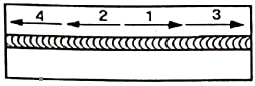

침투비파괴검사산업기사 (2020-06-06 기출문제)
1과목: 비파괴검사 개론
1. 침투탐상시험의 적용 방법에 대한 설명으로 옳은 것은?
- 침투시간을 단축하기 위해서는 버너 등으로 탐상 시작 전에 침투액을 가열하여야 한다.
- 습식현상법은 수세성 염색침투탐상시험에 실시하는 것이 효율성을 높일 수 있다.
- 물과 전원이 없는 장소의 대형구조물 부분검사에는 후유화성 형광침투탐상시험이 적합하다.
- 건식현상법은 수세성 또는 후유화성 형광침투액을 사용하는데 주로 이용된다.
(정답률: 57%)

2. 전자기초음파 탐상의 특징으로 틀린 것은?
- 전기, 음향변화 능률이 떨어진다.
- 탐상감도가 약간 저하된다.
- 접촉매질의 두께에 영향을 받는다.
- 정밀한 두께 측정이나 음속 측정에 적합하다.
(정답률: 50%)
3. 비파괴검사법 중 시험체의 내부와 외부의 압력차를 이용하여 기체나 액체가 결함부를 통해 흘러 들어가거나 나오는 것을 감지하는 방법으로써 압력용기나 배관 등에 적용하기 적합한 시험법은?
- 누설검사
- 침투탐상시험
- 자분탐상시험
- 초음파탐상시험
(정답률: 87%)
4. 물리적 현상의 원리에 따른 비파괴검사 방법을 분류한 것 중 틀린 것은?
- 광학-육안검사
- 열-누설검사
- 투과-방사선검사
- 전자기-와류탐상검사
(정답률: 83%)
5. 초음파탐상시험에서 공진법으로 시험체의 두께를 측정할 때 2MHz의 주파수에서 기본공명이 발생했다면 이 시험체의 두께는 몇 mm인가? (단, 시험체 내의 초음파 속도는 4800m/s이다.)
- 1.2
- 2.4
- 3.6
- 4.8
(정답률: 57%)
6. 과공석강의 탄소함유량은 약 몇 wt%인가?
- 0.025~0.8%
- 0.8~2.0%
- 2.0~4.3%
- 4.3~6.67%
(정답률: 73%)
7. 어떤 물질이 일정한 온도, 자장, 전류밀도하에서 전기저항이 0(zero)이 되는 현상은?
- 초투자율
- 초저항
- 초전도
- 초전류
(정답률: 79%)
8. 결정구조 및 격자에 대한 설명으로 옳은 것은?
- 금속은 상온에서 불규칙적인 결정구조를 갖는다.
- 전위, 적층결함 등의 격자결함을 점결함이라 한다.
- 온도 또는 압력의 변화에 의해 결정구조가 달라지는 것을 자기변태라 한다.
- 용매금속의 결정격자 속에 용질금속이 들어간 상태를 고용체라 한다.
(정답률: 61%)
9. 오스테나이트계 스테인리스강의 공식(pitting)을 방지하기 위한 대책이 아닌 것은?
- 할로겐 이온의 고농도를 피한다.
- 산소농담전지의 형성을 극대화 한다.
- 질산염, 크롬산염 등의 부동태화제를 가한다.
- 재료 중의 탄소를 적게 하거나 Ni, Cr, Mo등을 많게 한다.
(정답률: 52%)
10. 리드 프레임(lead frame) 재료에 요구되는 성능이 아닌 것은?
- 고집적화에 따라 열방산이 좋을 것
- 보다 작고 엷게 하기 위하여 강도가 클 것
- 재료의 치수정밀도가 높고 잔류응력이 클 것
- 본딩(bonding)하기 용이하도록 우수한 도금성을 가질 것
(정답률: 71%)
11. 다음 중 강의 담금질성을 개선시키는 효과가 가장 큰 것은?
- B
- Si
- Ni
- Cu
(정답률: 62%)
12. 온도에 따른 열팽창계수, 탄성계수 변화가 작아 고급 시계, 정밀 저울 등의 부품에 사용되는 Ni합금은?
- 콘스탄탄(constantan)
- 모넬합금(monel metal)
- 알드레이(aldrey)
- 엘린바(elinvar)
(정답률: 64%)
13. 강과 비교한 회주철의 특징을 설명한 것 중 틀린 것은?
- 감쇠능이 크다.
- 열전도도가 높다.
- 피삭성이 우수하다.
- 압축강도에 비해 인장강도가 크다.
(정답률: 55%)
14. 철강의 5대 원소에 해당하는 것은?
- C, Si, Mn, P, S
- Ti, Mo, Cr, P, S
- Si, Mn, MO, Cr, S
- Si, Mn, Ta, Cu, Sn
(정답률: 77%)
15. 6:4 황동에 1% 내외의 Fe를 합금하여 결정립을 미세화하고 연신율의 감소 없이 강도를 증가시킨 고강도 황동은?
- 델타메탈(delta metal)
- 모넬메탈(monel metal)
- 두라나메탈(durana metal)
- 네이벌 브라스(naval brass)
(정답률: 56%)
16. 다음 중 언더컷의 원인이 아닌 것은?
- 전류가 너무 높을 때
- 아크 길이가 짧을 때
- 용접 속도가 적당하지 않을 때
- 용접봉 유지 각도가 부적당 할 때
(정답률: 66%)
17. 수축과 잔류응력을 줄이기 위해 사용하는 용착법으로 그림과 같은 용착법은?

- 백스텝법
- 스킵법
- 전진법
- 대칭법
(정답률: 77%)
18. 고체 상태에 있는 두개의 금속 재료를 열이나 압력 또는 열과 압력을 동시에 가해서 서로 접합 시키는 기술을 무엇이라고 하는가?
- 리벳
- 용접
- 집어 잇기
- 기계적 이음
(정답률: 82%)
19. 다음 교류 아크 용접기 중 가변 저항의 변화로 용접 전류를 조정하며 조작이 간단하고 원격 제어가 가능한 용접기는?
- 탭 전환형 용접기
- 가동 철심형 용접기
- 가동 코일형 용접기
- 가포화 리액터형 용접기
(정답률: 53%)
20. AW 240, 정격 사용률이 50%인 용접기를 사용하여 200A로 용접할 때 이 용접기의 허용 사용률은?
- 54%
- 60%
- 72%
- 120%
(정답률: 65%)
2과목: 침투탐상검사 원리 및 규격
21. 친수성 유화재의 장점을 설명한 것 중 틀린 것은?
- 친유성 유화재에 비하여 경제적이다.
- 침투액과 수분을 분리하여 층을 만든다.
- 물의 오염 관리가 용이하다.
- 유화재 속에 침투액이 혼입되면 피로가 일어나기 쉽다.
(정답률: 52%)
22. 침투탐상검사에 사용하는 침투제에 대한 설명 중 옳은 것은?
- 침투제는 무기용제로 만들어져 있기 때문에 무해하다.
- 침투제에는 주의를 하지 않을 경우 피부염을 유발시킬 수 있는 물질이 들어있다.
- 침투제에는 이성 판단을 흐리게 할 수 있는 환각제 성분이 다량 들어 있다.
- 최근 침투제의 기술개발로 착시현상 이외의 유해 요소는 완전히 제거되었다.
(정답률: 74%)
23. 다음 검사법 중에서 도자기의 제조과정에서 소성(baking) 전에 균열의 발생 유무나 콘크리트의 균열 등의 시험에 사용되는 것은?
- 하전입자의 흡착성을 이용한 침투탐상시험방법
- 휘발성의 침투액을 이용한 침투탐상시험방법
- 필터효과를 이용한 침투탐상시험방법
- 기제 방사성동위원소를 이용한 침투탐상시험방법
(정답률: 51%)
24. 침투탐상검사에서 불연속 이외의 의사지시에 대한 설명으로 옳은 것은?
- 의사지시는 대부분 비선형 지시로 나타난다.
- 의사지시는 대부분 다중 지시로 나타난다.
- 의사지시는 응력을 적게 받는 영역에서 주로 나타난다.
- 의사지시는 기하학적 구조, 표면상태, 조작처리에 기인하여 주로 나타난다.
(정답률: 71%)
25. 침투탐상검사에 사용되는 침투액에 요구되는 기본적인 성질 중 틀린 것은?
- 침투성이 좋아야 한다.
- 세척성이 좋아야 한다.
- 인화점이 낮아야 한다.
- 점성이 낮아야 한다.
(정답률: 82%)
26. 염색침투탐상검사 원리에서 가장 결함 검출감도가 높은 것은?
- 수세성 염색침투탐상시험
- 후유화성 염색침투탐상시험
- 용제제거성 염색침투탐상시험
- 용제현탁성 염색침투탐상시험
(정답률: 70%)
27. 침투액의 재질은 어떤 경우에는 부식성이 없는 재료를 사용해야 한다. 특히 티타늄과 니켈 함량이 높은 강의 경우에는 침투액의 성분에 대하여 규격에서 최소량을 정하고 있다. 다음 중 그 성분에 해당하는 것은?
- 유황, 염소
- 카드늄, 납
- 철, 니켈
- 규소, 텅스텐
(정답률: 70%)
28. 후유화성 형광 습식현상 탐상검사를 수행할 경우 건조처리는 언제 하여야 하는가?
- 현상처리 전
- 유화처리 후
- 유화처리 전
- 현상처리 후
(정답률: 63%)
29. 침투탐상검사 원리에서 침투에 미치는 영향이 아닌 것은?
- 침투액의 색깔
- 침투액 표면장력
- 침투액의 접촉각
- 침투액의 적심성
(정답률: 84%)
30. 침투탐상검사의 원리 중 침투 영향인자가 아닌 것은?
- 표면 장력
- 모세관 현상
- 적심성
- 아르키메데스 원리
(정답률: 82%)
31. 침투탐상 시험방법 및 침투지시모양의 분류(KS B 0816)에 의한 결함의 분류 중 독립 결함에 해당되지 않는 것은?
- 갈라짐
- 선상 결함
- 분산 결함
- 원형상 결함
(정답률: 69%)
32. 침투탐상 시험방법 및 침투지시모양의 분류(KS B 0816)에 따른 탐상 결과의 관찰에 대한 설명으로 잘못된 것은?
- 지시모양의 관찰은 현상제를 적용한 다음 7분 후에 하는 것이 바람직하다.
- 형광침투액을 사용한 경우 관찰하기 전에 1분 이상 어두운 곳에서 눈을 적응시킨다.
- 형광침투액을 사용한 경우 시험체 표면에서 800μW/cm2이상의 자외선을 비추면서 관찰한다.
- 염색침투액을 사용한 경우 시험면의 밝기가 20lx 이하인 자연광 아래에서 관찰하는 것이 바람직하다.
(정답률: 65%)
33. 침투탐상 시험방법 및 침투지시모양의 분류(KS B 0816)에서 시험기록에 포함할 내용이 아닌 것은?
- 시험연월일
- 침투제의 오염물관리
- 시험방법의 종류
- 조작 방법
(정답률: 78%)
34. 침투탐상 시험방법 및 침투지시모양의 분류(KS B 0816)에서 지시모양의 관찰은 현상시간이 시작된 후 최대 몇 분 이내에 수행해야 하는가?
- 즉시
- 4분
- 20분
- 60분
(정답률: 68%)
35. 보일러 및 압력용기에 대한 침투탐상검사(ASME Art.6)에서 검사품을 유지해야 하는 온도로 옳은 것은?
- 0℃
- 10℃
- 53℃
- 63℃
(정답률: 59%)
36. 침투탐상 시험방법 및 침투지시모양의 분류(KS B 0816)에 규정한 표준온도 범위에서의 현상시간은?
- 3분
- 5분
- 6분
- 7분
(정답률: 63%)
37. 침투탐상 시험방법 및 침투지시모양의 분류(KS B 0816)에서 A형 대비시험편의 재질로 옳은 것은?
- 구리 합금
- 니켈 합금
- 알루미늄 합금
- 마그네슘 합금
(정답률: 81%)
38. 침투탐상 시험방법 및 침투지시모양의 분류(KS B 0816)에 규정한 시험방법의 기호가 DFA-D일 때 맞는 시험방법은?
- 수세성 이원성 염색침투액-속건식현상법
- 수세성 이원성 형광침투액-습식현상법
- 수세성 이원성 염색침투액-건식현상법
- 수세성 이원성 형광침투액-건식현상법
(정답률: 65%)
39. 침투탐상 시험방법 및 침투지시모양의 분류(KS B 0816)에 따른 시험을 하여 합격한 시험체로 표시를 하는 방법으로 틀린 것은?
- 전수 검사인 경우 각인, 부식 또는 착색으로 시험체에 P의 기호를 표시한다.
- 전수 검사인 경우 시험체에 기호 표시가 곤란한 경우에는 적갈색으로 착색하여 표시한다.
- 샘플링 검사인 경우 합격한 시험체에 Ⓟ의 기호 또는 착색으로 표시한다.
- 샘플링 검사인 경우 합격한 시험체에 청색에 한하여 착생으로 표시한다.
(정답률: 57%)
40. 침투탐상 시험방법 및 침투지시모양의 분류(KS B 0816)에서 일반적인 침투제의 적용 온도 범위는?
- 10~52℃
- 15~50℃
- 4~52℃
- 5~52℃
(정답률: 73%)
3과목: 침투탐상검사 시험
41. 침투탐상검사에서 소형 대량 제품에 가장 적합한 침투액의 적용 방법은?
- 분무법
- 붓칠법
- 담금법
- 흘림법
(정답률: 77%)
42. 현상제의 종류에 따른 현상시간의 설정에 대한 설명으로 옳은 것은?
- 건식현상제:현상제의 건조 직후부터 관찰 완료 때 까지를 현상시간으로 한다.
- 습식현상제:현상제의 적용 직후부터 관찰 완료 때 까지를 현상시간으로 한다.
- 습식 현상제:현상제를 적용하고 있는 시간을 현상시간으로 한다.
- 건식현상제:현상제를 적용하고 있는 시간을 현상시간으로 한다.
(정답률: 53%)
43. 얕고 넓은 표면 결함을 검출하는 데 가장 감도가 좋은 침투탐상검사는?
- 수세성 염색침투탐상검사
- 수세성 형광침투탐상검사
- 후유화성 형광침투탐상검사
- 용제제거성 염색침투탐상검사
(정답률: 61%)
44. 침투탐상검사를 할 때 의사지시모양이 나타나는 원인이 아닌 것은?
- 전처리가 불충분할 때
- 유화 처리가 과다할 때
- 세척처리가 부족할 때
- 표면에 과잉 침투액이 남아 있을 때
(정답률: 66%)
45. 침투탐상검사에서 지시가 원형으로 나타나는 불연속은?
- 균열
- 겹침
- 긁힘
- 기공
(정답률: 81%)
46. 침투탐상검사의 거치식 장치에 필수적인 장비가 아닌 것은?
- 건조대
- 침투조
- 세척탱크
- 조도계
(정답률: 66%)
47. 볼트 나사부 등 복잡한 형상의 시험체에 가장 적합한 침투액은?
- 후유화성 형광침투액
- 용제제거성 형광침투액
- 수세성 형광침투액
- 용제제거성 염색침투액
(정답률: 56%)
48. 침투탐상검사의 대비시험편에 대한 설명으로 옳은 것은?
- A형 대비시험편을 재사용하기 위한 가열온도는 530℃이다.
- 대비시험편은 탐상제의 성분 및 시험면에 검출된 결함의 크기 추정을 위해 사용된다.
- B형 대비시험편은 깊이가 일정한 도금균열을 재현성 좋게 제작한 것으로 반복 사용에 적합하다.
- A형 대비시험편은 중앙부에 홈을 가공하지 않은 상태로만 사용해야 한다.
(정답률: 59%)
49. 침투탐상검사에서 수세성 침투액을 제거하기 위한 방법으로 옳은 것은?
- 솔로 제거하는 방법
- 물로 세척하는 방법
- 초음파로 세척하는 방법
- 증기로 유지성분을 제거하는 방법
(정답률: 80%)
50. 형광침투탐상검사에서 암실의 조도기준은?
- 1lx 이하
- 20x 이하
- 30x 이하
- 40x 이하
(정답률: 81%)
51. 침투탐상검사에서 용접부의 침투처리 방법에 대한 설명으로 틀린 것은?
- 침투액은 침지, 붓질, 분무 등으로 도포한다.
- 침투액의 건조 우려가 있을 때 침투액을 추가로 도포한다.
- 침투시간을 고려하지 않고 장시간 동안 방치한다.
- 침투시간은 예상되는 결함의 종류와 크기에 따라 결정한다.
(정답률: 83%)
52. 침투탐상검사에서 일반적으로 무현상법 적용이 가능한 침투액은?
- 수세성 염색침투액
- 후유화성 염색침투액
- 고감도 형광침투액
- 용제제거성 염색침투액
(정답률: 56%)
53. 침투탐상검사에서 일반적인 현상제의 선택 기준으로 짝지어진 것은?
- 소형부품 대량검사-습식현상법
- 거친 표면-무현상법
- 얕고 넓은 결함-건식현상법
- 미세한 결함-무현상법
(정답률: 65%)
54. 침투탐상검사에서 결함의 분류방법으로 유용한 방법이 아닌 것은?
- 검사방법에 의한 분류
- 크기 및 형상에 의한 분류
- 재료에 의한 분류
- 제조 공정에 의한 분류
(정답률: 39%)
55. 침투탐상검사에서 현상제의 기능에 대한 설명으로 옳은 것은?
- 침투액에 형광을 첨가시킨다.
- 불연속부의 침투액을 흡출시킨다.
- 침투액의 분산을 막아 주는 역할을 한다.
- 지시가 재빨리 나타나는 것을 억제하는데 도움을 준다.
(정답률: 71%)
56. 수세성 염색ㆍ침투탐상검사 시 표면 거칠기(Rmax) 한계는 일반적으로 얼마인가? (단, 측정 단위는 μm이다.)
- 3
- 30
- 100
- 300
(정답률: 49%)
57. 침투탐상검사용 장치가 구비해야 할 최소요건이 아닌 것은?
- 조작 시 숙련을 요구해야 한다.
- 장치의 관리가 쉬어야 한다.
- 시험을 신속하고 정확하게 실시할 수 있어야 한다.
- 결함을 확실히 검출할 수 있어야 한다.
(정답률: 68%)
58. 침투탐상검사에서 시험체 온도가 100~250℃ 정도의 고온 탐상제를 적용하는 검사 방법은?
- 용제제거성 형광침투탐상검사
- 수세성 염색침투탐상검사
- 수세성 형광침투탐상검사
- 용제제거성 염색침투탐상검사
(정답률: 48%)
59. 침투탐상검사의 장점이 아닌 것은?
- 미세한 균열을 찾을 수 있다.
- 작은 검사물을 검사하는 데 좋다.
- 비교적 단순한 검사법이다.
- 어떠한 온도에서도 가능하다.
(정답률: 82%)
60. 주조품 침투탐상검사에서 검출할 수 없는 결함은?
- 냉간 균열
- 기공
- 수축공
- 스패터
(정답률: 65%)